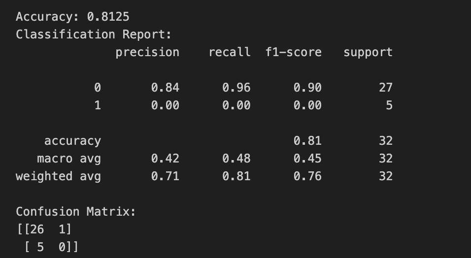
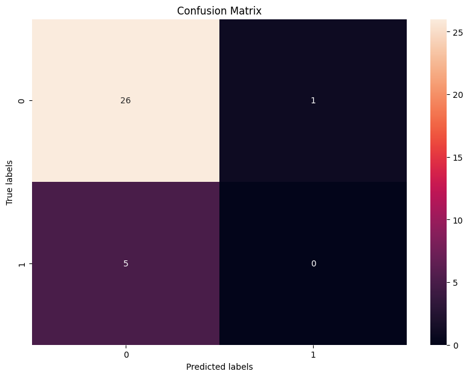

Overview
Naive Bayes (NB) is a family of simple, probabilistic classifiers based on applying Bayes' theorem with strong (naive) independence assumptions between the features. It's a highly efficient and easy-to-implement algorithm that can be used for various classification tasks in machine learning, such as spam detection, sentiment analysis, and document categorization.
Applications of Naive Bayes:
- Spam Detection: By analyzing the frequency and distribution of words in emails, NB can classify emails as spam or not spam.
- Sentiment Analysis: It can be used to determine whether the sentiment of text data (like tweets or reviews) is positive, negative, or neutral.
- Document Categorization: NB can automatically categorize news articles, academic papers, or web pages into predefined categories.
- Disease Prediction: In healthcare, it can predict the likelihood of a disease based on symptoms and patient data.
Approach to Applying Naive Bayes to Your Text Data:
- Preprocessing: This includes cleaning the text data (removing stopwords, stemming, etc.), converting the text into a numerical format through techniques like TF-IDF or count vectorization, and splitting the data into training and test sets.
- Model Selection: Choosing the appropriate Naive Bayes model (e.g., Multinomial, Bernoulli, Gaussian) based on the nature of your data. For text data, the Multinomial Naive Bayes is often suitable.
- Training: Using the training data to train the NB model. This involves calculating the probabilities of the different classes and the conditional probabilities of each feature given the class.
- Evaluation: Assessing the model's performance with the test data through metrics such as accuracy, precision, recall, and F1 score.
Predicting or Classifying with Your Data: Without seeing your dataset (final_clean_Data.csv), I can suggest a general application. For instance, if your dataset contains product reviews and their corresponding sentiments, we could use NB to predict the sentiment of unseen reviews. This classification could help in automatically monitoring customer satisfaction and improving product or service quality.
Project Goals Contribution:
Applying NB to your text data can contribute to your project goals by:
- Automating the classification process, saving time and resources compared to manual categorization.
- Providing insights into the nature of the text data, such as the predominant sentiments in customer feedback or the most common topics in a collection of documents.
- Improving decision-making by providing data-driven evidence to support strategies and interventions.
It appears the output of the dataset is too large and complex to be fully displayed here, indicating that the dataset may have a wide variety of columns or a complex structure. To proceed effectively, I'll focus on understanding the key aspects of your dataset necessary for applying Naive Bayes:
- Column Names: Identifying the names of the columns will help us understand the type of data we have and select relevant features for our classification task.
- Data Types: Understanding the types of data (numerical, categorical, text) will inform our preprocessing steps.
- Sample Data: A glimpse of the actual data values will guide us in understanding the context and content of the text data we aim to classify.
Let's start by extracting and examining this foundational information. It appears there's been a misinterpretation of the dataset structure, likely due to the dataset's complexity or formatting issues. The output suggests an issue with how the data is being read or displayed, showing only two columns ("Labeled" and "Comment") with unexpected data types (both float64), which doesn't align with a typical text data format expected for a Naive Bayes application.
Given this challenge, I recommend the following steps to correctly interpret and utilize your dataset for Naive Bayes classification:
- Re-evaluate the CSV Structure: We should first ensure that the CSV file is correctly formatted, with clear column headers and consistent data entries. This includes checking for proper delimiters and quotation marks around text fields.
- Preprocessing: It may be necessary to preprocess the dataset, ensuring that text data is correctly identified and parsed, and that any target variable for classification (e.g., sentiment labels) is correctly formatted.
- Feature Selection: We need to identify which columns contain the text data we want to classify and which column (if present) contains the labels for supervised learning.
the dataset appears to be suitable for a text classification task using Naive Bayes. Here's how we could proceed:
- Text Preprocessing: Given that the "Comment" column contains textual data, we would need to preprocess this text by removing punctuation, lowercasing the text, removing stopwords, and possibly applying stemming or lemmatization to reduce words to their base forms.
- Feature Extraction: Convert the preprocessed text into a numerical format that the Naive Bayes algorithm can work with. This is typically done using techniques like Count Vectorization or TF-IDF Vectorization, which transform the text into a sparse matrix of token counts or weighted token frequencies, respectively.
- Label Extraction: If the "Labeled" column contains the labels for each comment (which needs further verification), we would use this as our target variable. It's crucial to ensure that the labels are correctly formatted, ideally as a binary or categorical variable depending on the classification task (e.g., positive vs. negative sentiment, different categories of topics).
- Model Training and Evaluation: Split the data into training and test sets. Use the training set to train a Naive Bayes classifier and then evaluate its performance on the test set using appropriate metrics (accuracy, precision, recall, F1 score, etc.).
Data Preparation
All models and methods require specific data formats. Supervised modeling requires first that you have labeled data. Next, it requires that you split your data into a Training Set (to train/build) the model, and a Testing Set to test the accuracy of your model. ONLY labeled data can be used for supervised methods.
Supervised learning is a type of machine learning where the algorithm learns from labeled data. The data is composed of input-output pairs, where the input is the feature(s) and the output is the label. The goal is for the model to learn to predict the output from the input data. To achieve this, supervised learning requires a two-step process involving a Training Set and a Testing Set:
- Training Set: This subset of the data is used to train or build the model. It teaches the model to recognize patterns in the data that correlate the input features with their corresponding labels. The model learns the relationship between the inputs and outputs during this phase.
- Testing Set: This subset is used to evaluate the model's performance. It consists of unseen data (by the model) and is used to test how well the model generalizes to new, unseen examples. The testing set helps to estimate the model's accuracy and other performance metrics in a real-world scenario.
Importance of Disjoint Sets:
The Training and Testing sets must be disjoint to ensure an unbiased evaluation of the model. If there's an overlap, the model might simply memorize specific examples rather than learn the general patterns, leading to overfitting. An overfitted model performs well on the training data but poorly on any new data. By keeping these sets disjoint, we can more accurately gauge the model's ability to generalize.
Creating the Training and Testing Sets:
The process usually involves randomly splitting the labeled dataset into two parts: a larger portion for training (e.g., 70-80% of the dataset) and a smaller portion for testing (e.g., 20-30%). This split ensures the model has enough data to learn from while also reserving a portion of the data for an unbiased evaluation.
Full Dataset: Initially, we have a small dataset consisting of comments (features) and their associated labels (positive or negative). This dataset represents the kind of labeled data required for supervised learning, where each input (a comment about electric cars) is associated with an output label (positive or negative sentiment).
Training Set: This subset of the data is used to train the model. It contains a random selection of 60% of the original dataset. The model learns to associate the features (comments) with the correct labels (sentiments) during this phase.
Testing Set: The remaining 40% of the data forms the testing set. It is used to evaluate the model's performance, specifically its ability to generalize the patterns it learned during training to new, unseen data. This set is crucial for understanding how the model might perform in real-world scenarios.
By splitting the dataset into training and testing sets, ensuring they are disjoint (no overlap), we prevent the model from simply memorizing the dataset. Instead, the model must learn the underlying patterns that relate the features to their labels. This approach allows for an unbiased evaluation of the model's predictive power on data it has not seen before, which is critical for assessing its practical utility.
Explain this and show an image of the sample of data you plan to use.
Also include information and a small image of the Training Set and Testing set and explain how you created them and why they are (and must be) disjoint.

Results
Based on the confusion matrix and the classification report you provided, we can discuss and interpret the results of the Naive Bayes classifier:
Confusion Matrix Interpretation:
The confusion matrix is a 2x2 grid that shows the counts of true positive, true negative, false positive, and false negative predictions of the classifier.
- True Positives (TP): The classifier correctly predicted '1' for 0 instances.
- True Negatives (TN): The classifier correctly predicted '0' for 26 instances.
- False Positives (FP): The classifier incorrectly predicted '1' when the true value was '0' for 1 instance.
- False Negatives (FN): The classifier incorrectly predicted '0' when the true value was '1' for 5 instances.
In the context of your dataset, assuming '0' represents the negative class and '1' represents the positive class, your model is very good at identifying the negative class but fails to identify any of the positive class instances.
Classification Report Interpretation:
The classification report provides key metrics about the performance of the classifier:
- Precision (0 class): Of all instances the classifier predicted as '0', 84% were actually '0'. Precision for the '1' class cannot be calculated as the denominator (TP + FP) is zero due to no instances being predicted as '1'.
- Recall (0 class): Of all actual '0' instances, the classifier correctly identified 96%. For the '1' class, the recall is 0%, as the classifier did not correctly identify any true '1' instances.
- F1-Score: The F1-score for the '0' class is high at 0.90, indicating a good balance between precision and recall. For the '1' class, the F1-score is 0, reflecting the poor performance for this class.
- Support: Indicates how many instances of each class are present in the test set; 27 instances of class '0' and 5 instances of class '1'.
Overall Model Performance:
The accuracy of the model is 81.25%, which might seem high, but this is largely due to the model's ability to correctly classify the more prevalent negative class (class '0').
The model's overall performance is highly skewed towards the negative class and it has failed to classify any instance of the positive class correctly.
The macro average for precision, recall, and F1-score is low because these averages treat all classes equally, reflecting the poor performance on the less represented class.
The weighted average accounts for class imbalance by weighting the scores by the support for each class. This gives a more optimistic view of the performance but still indicates issues due to the zero F1-score for the positive class.
Discussion and Further Steps:
The model's inability to identify the positive class suggests a problem. This could be due to class imbalance, as there are far fewer positive instances than negative ones.
To improve model performance, consider techniques like oversampling the minority class, using synthetic data generation (e.g., SMOTE), or adjusting the model's class weight parameter.
It's also important to consider the business or application context. If false negatives have a higher cost (e.g., in medical diagnosis), then the current model is not suitable.
Alternative models or approaches may need to be considered, such as a different Naive Bayes variant, or even a different algorithm altogether that may better handle imbalanced data.
Visualization:
The confusion matrix visualization you shared shows the counts in each category of predictions, with a color gradient indicating the count of instances. Darker colors represent higher counts. The visualization helps in quickly assessing which classes are being predicted correctly or incorrectly.


Conclusions
Model Bias Toward the Majority Class:
The Naive Bayes classifier appears to be biased towards the majority class ('0'). This is evident because it correctly predicts the majority class most of the time but fails to identify any instances of the minority class ('1').
Class Imbalance Issue:
The provided metrics suggest a class imbalance, which is a common problem in classification tasks. The model's inability to predict the positive class ('1') could be due to the minority class being underrepresented in the training data.
Predictive Limitations:
The current model has limitations in its predictive capabilities. It cannot be relied upon to predict instances of the minority class, which limits its usefulness depending on the domain. For instance, if this were a medical diagnosis scenario where class '1' represents a disease, the model would not be suitable for use due to the inability to detect true positive cases.
Accuracy Paradox:
The high accuracy (81.25%) is misleading due to the model's poor performance on the minority class. This scenario is known as the "accuracy paradox" where accuracy is not a reliable metric alone, especially with imbalanced datasets.
Model Evaluation:
Precision, recall, and F1-score are critical for evaluating model performance, especially in imbalanced datasets. In this case, these metrics indicate poor performance for the minority class, which could be a focal point for future improvement efforts.
Predictions and Implications:
Based on the current model's performance, predictions for the minority class ('1') would be highly unreliable. Therefore, if making predictions about this class is crucial for your topic, the model requires significant improvement.